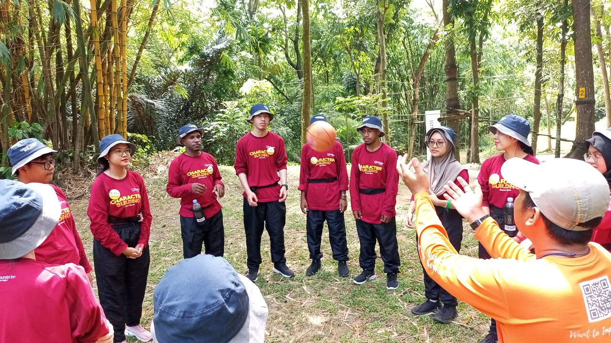
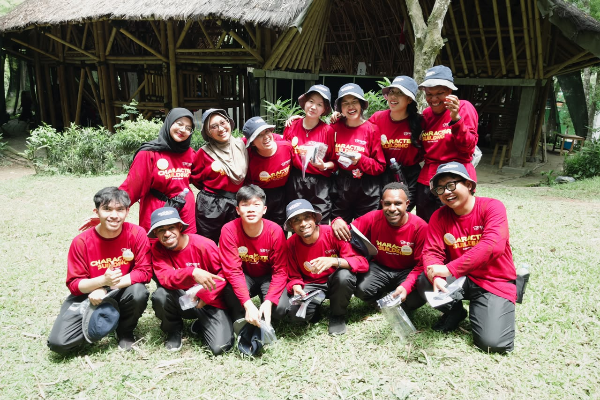
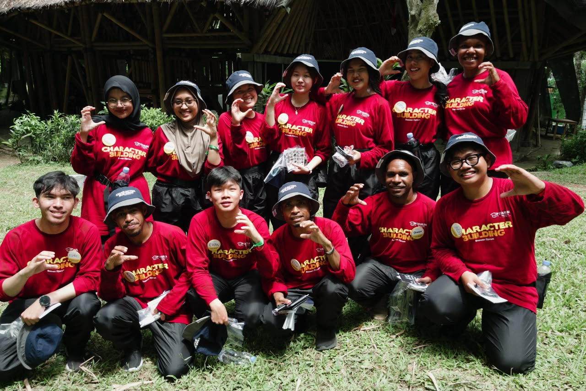

Dari mana kita mulai
Tiga tahap yang kita lewati bareng, dan gak terasa waktu sudah bejalan lebih cepat dari apa yang kita kira, satu tahun terasa seperti hitungan hari, dan kenangan kita sudah pastinya jadi cerita yang abadi.
Maaf menambah berat barang bawaan yaa xixix
Di sini potret-potret lain dari hari-hari yang sama. Ketuk satu foto untuk melihatnya lebih besar.
Yang sempat terekam
Bukan foto yang rapi, justru itu yang paling kita ingat. Geser ke samping.
Satu lagu buat kita
Cuma satu, tapi cukup. Kalian adalah memorii baikkkkkkkk.
Musiknya mengalun selama kamu membaca. Ketuk kaset kalau mau menjeda.
Day 1 ini coy wkwk
Di hari pertama, kita langsung dihadapkan dengan yel-yel, perkenalan, dan game pertama. Bahkan, HP pun harus dikumpulkan. Jujur, awalnya aku masih cukup kaget melihat orang-orang sekeren ini. Dari yang awalnya masih canggung, perlahan kita mulai akrab, menyelesaikan setiap tantangan, dan berjuang bersama. Koordinasi kita awalnya memang berantakan, tetapi siapa sangka, lama-lama justru jadi salah satu tim terbaik. IZINNNNN!



Kemenangan versi kita
Tidak ada piala di foto ini. Cuma kita, seragam merah, dan Outward Bound yang jadi saksi bahwa hari itu kita sampai di garis akhir. Salah satu lelah yangg ingin aku ulang AHAHHA.

Sorak yang masih terasa
Yel-yel Kelompok 3. Kalau sekarang ditonton lagi, rasanya masih sama: heboh, penuh semangat, dan sedikit terdengar seperti sedang menantang kelompok lain AAHAHAHA (jujur, aku suka). yang penting tetap kompak cihuyyy

Yang pernah ada di sini
Orang-orang yang pernah duduk bersama, berbagi cerita, dan tertawa untuk hal-hal sederhana. Mungkin suatu hari nanti kita akan lupa beberapa detailnya, tetapi nama-nama ini akan selalu menjadi bagian dari cerita yang pernah kita jalani. Nama-nama yang semoga tidak hanya tersimpan di halaman ini, tetapi juga dalam ingatan kita.
Sampai ketemu lagi.
Suatu hari nanti, kita akan kembali sibuk dengan kehidupan masing-masing. Percakapan di grup mungkin tidak seramai sekarang, dan nama-nama yang dulu selalu muncul perlahan akan tenggelam di antara kesibukan.
Namun, jika suatu hari rasa rindu itu datang, semoga halaman ini bisa membawa kita kembali pada masa ketika kita pernah menghabiskan waktu bersama.
Kita pernah sedekat itu, dan itu nyata. Kelak, kisah ini akan menjadi cerita yang kita kenang, menjadi canda dan tawa di tengah perjalanan kita menuju pendewasaan.